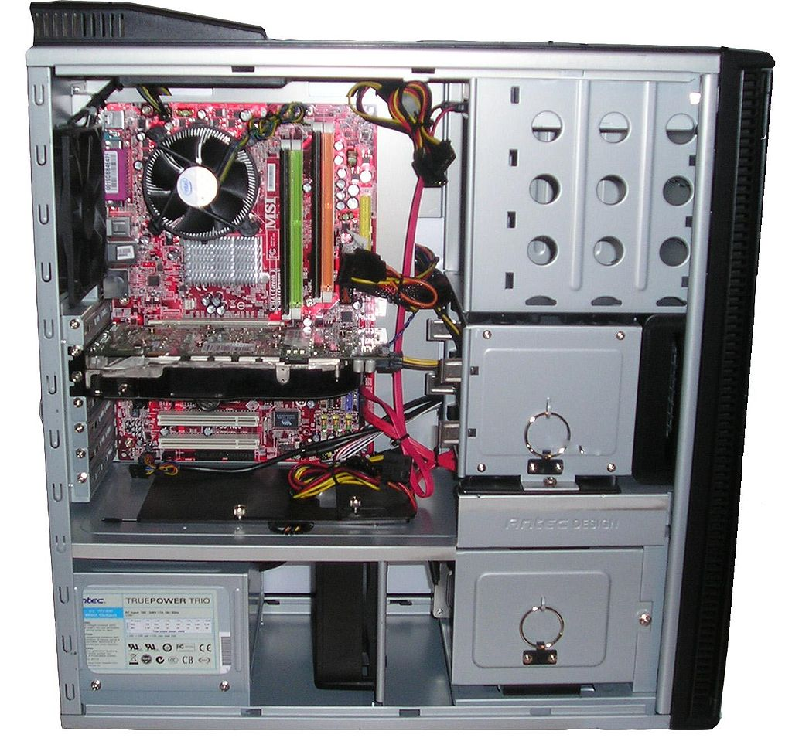

Keskusyksikkö on tietokoneen laitteiston keskeinen osa, joka sisältää keskussuorittimen. Tietokoneessa voi olla useita suorittimia moniprosessoinnissa. Supertietokoneet voivat koostua useista laitekaapeista, jolloin laitteistossa ei ole vain yhtä keskusyksikköä. Lähde: Wikipedia
